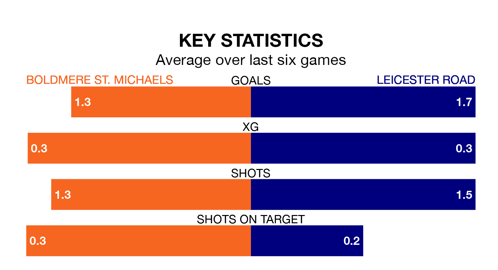

Leicester Road visit Boldmere St. Michaels on Saturday on the back of three consecutive wins in Northern Premier League Division One Midlands.
Leicester Road have picked up 13 points from their last six games, and they face a Boldmere St. Michaels side who drew their last match, and have collected 10 points from the last possible 18.
With 43 goals in 24 games so far this season, Boldmere St. Michaels are scoring more than average in the league with 1.8 goals per game. And they are conceding fewer than average, letting in 33 goals at a rate of 1.4 per game.
Leicester Road are also above average scorers, with 1.7 goals per game, compared to a league average of 1.5. They have conceded 1.2 goals per game.
The visitors are fourth in the table after 24 games, of which they have won 13 and drawn seven, earning 46 points.
The home team are six places behind Leicester Road in 10th, with 10 wins and three draws putting them on 33 points.
In the last three years, Boldmere St. Michaels and Leicester Road have played each other on three occasions. Boldmere St. Michaels won one of them and Leicester Road the other.
Their last meeting was on October 21, when Leicester Road won 2-1 at home.
Boldmere St. Michaels's last match was on January 20, a 1-1 draw against Bedworth United.
Leicester Road beat Sutton Coldfield Town 3-1 last time out, on January 13.
Updated: 09:18 (UTC), 23/01/24